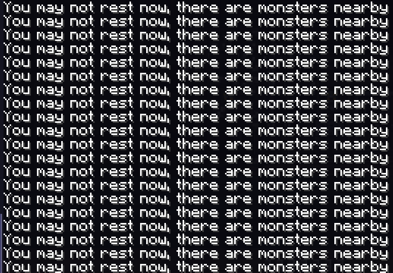

——and I’m alone
这个应该前几天就写的，但是一时懒了，好了，现在忘了当时想了什么。
有一个视频，是关于衣鱼的，有人在评论区里边提及他的故事，以及他非常害怕这种小虫子。
于是我分享了我的故事。
我的童年，有一部分时光是和母亲，图书馆里边度过的，而老旧的图书馆，通常都会有这种虫子。
作为一个并不害怕大部分虫子的人，我偶尔翻弄旧书的时候经常会爬出来几个，爬到我的手上，随即被我弹落。
因此，图书馆那书架木材腐朽的味道，书本受潮发霉的气息，角落里边的白鱼（衣鱼，但是我想叫它白鱼）以及随处可见的白鱼尸体，若有若无的蛀木虫啃木头的声音，都构成了我美好的回忆。
细细想来，我并不害怕虫子，恐怖游戏，我并不觉得这个值得骄傲的，只是觉得这个很正常，当然我也觉得害怕这些也很正常。
我只是思考着一个问题：我到底是基因里边没有害怕，还是同年经历导致我不害怕的呢？（毕竟小时候在乡下住，天天接触各种虫子，并且还很幸运地没有遇到任何危险。）
哦对，虫虫对于我，最大的危机，不外乎一件事，马蜂。
这也是一个小故事来着，我可以简单说说。
某天吃饱了撑着的我，听闻有人说某个地方有马蜂窝，就屁颠屁颠跑了过去，那是一大片废弃的红薯地，到处都是密密麻麻的红薯叶。
于是，我一脚踩在了马蜂窝上。
哦豁。
事后小伙伴数了下，17个包。
这种马蜂其实是有小毒的，然而我再次很幸运地，没有这种过敏体质，有过敏体质或许就麻烦了。
一个礼拜多之后，我和小伙伴通过烟火驱赶马蜂，成功地摘下了马蜂窝，马蜂窝塌了一小边，想必是我踩的地方。
尽管如此，我依旧对这些常见的昆虫没有任何恐惧，倒是对一些寄生虫有本能的不适。
我恐高么？emmm，在极高处向下看，确实怕，但是安全情况下，大约还好？
至于恐怖游戏，jump scare 人人都会被吓一跳的吧？除此之外，大抵是不怕的，相对于不算逼真的鲜血，残肢，骸骨，我并无太大反应。
至于神鬼，我只能说，我父母都没有宗教信仰，我很自然地，也沾染很少这方面的事物，
再者小时候接触不少怪力乱神的报道，文章，杂志。现在回想起来，挺郁闷的，都是假的，只有人心可畏是真的。
这里展开说一下，我相信人性本恶，或者是，在做人之前，你必然是一个动物，动物把同伴的食物偷吃掉很奇怪么？动物欺骗同类很奇怪么？一点也不。
然而科技的作用之一，让人们先填报肚子，再然后才是仁义道德。
哦，再补充一下，我突然想到，“恐惧来源于未知”
接触久了，有了了解，那就不怕了。我应该就这样。嗯，中肯的。
现在时间以及到了凌晨两点，然而我并不想睡，这个习惯实在谈不上健康，但是我确实是喜欢黑夜安静的感觉。
街边太多人与车 繁华闹市人醉夜
在雨中漫步 蓝色街灯渐露
时时漏夜冒昧探你 将锁碎东西带走 然后又放低
群友找到女朋友，真羡慕啊。
我这个恋爱都没怎么谈过的，确实只能说羡慕。
认真分析，我觉得应该是我太死宅了，并且情商不够，经常不知道如何和人相处。
经常某一个对话过去几小时，几天之后，才想着，我当时应该如此如此回答比较合适，得体。
当然，普通人我懒得管，只是和几个比较好的朋友聊天时候，会想这个问题，然后尝试练习一下，争取下次回答好一点。
大概这时候别人回想我这样岂不是很累？私以为还好吧？习惯了？
我现在其实挺冷的，手脚冰凉，被窝是很暖和的，但是我依旧在电脑前。
倒不是被窝不好，只是所欲有甚于被窝也。
手套买了一双，9.9，很，也不能说好不好的问题，就是比较“抽象”，只能说，是这么个价格。
我后悔了。
不知不觉中，冬天来了啊，今年也是一个人过冬天呢。
从前，性方面我可以暂且自己用手解决，可是
我能撸自己的管，却撸不了自己的心
米库可爱捏~(￣▽￣)
世界太大，需要何其幸运才能遇到适合的人，暗自思考，却也有所释怀。
其实我很喜欢《徒然草》，里边谈论的事情，叙述的语气，都是平平淡淡的。
对于它我是越读越有味道。
突然想到一个有趣的事情：上面不是说到图书馆么，我曾经在图书馆（重点：初中图书馆）里边看到过《家猪的养殖技术指南》《房中术》《风水学》等离谱书籍，
说实话，我现在挺后悔的，
为啥当时没看看那本《房中术》呢，当时看了，现在就能和人吹嘘了，再后来，似乎图书管理员也发现了这些离谱玩意儿，通通处理掉了，我尝试再寻未果。
呸，现在大众的书店买的都是些啥玩意啊，都是些学习资料，知识库，网红文学，网络文学。也不是说不好，只是感觉太单调了。
不像我说的那个图书馆，小的很，这并不妨碍成为我的快乐来源之一，真就一宝库，在这些陈年老古董里边，能看到各种各样，稀奇古怪的东西，简直不要太美好。
我时常想着，我要是能长生不老，不死不灭该多好？先抛开孤独寂寞，人性缺失等乱七八糟的问题，（夏虫不可语冰，人类短短7/80岁的寿命，活300年可能还能想象一下，活1000年也只就能想到孤寂，想死等事情）
我说不定就可以登上月球，飞离银河，看看茫茫宇宙。.
星空是多么地璀璨，宇宙是多么地辽阔，而我只能在这里等死。
换一个。
其实我也时常想着，我要是有个空间戒指之类的东西就好了，我可以丢一堆东西屯起来。
什么吃到一半的食物（假设戒指内时间不流动），好闻的老书籍，旧衣服等等等。
膝盖有点冷，有点流鼻涕了，睡觉觉去。
突然有一个绝妙的点子:
西红柿炒蛋
首先,取鹌鹑蛋多个,煮熟剥壳,然后用红色色素染色,然后取黄色的番茄,切开一起炒.
最后端上去请朋友吃.